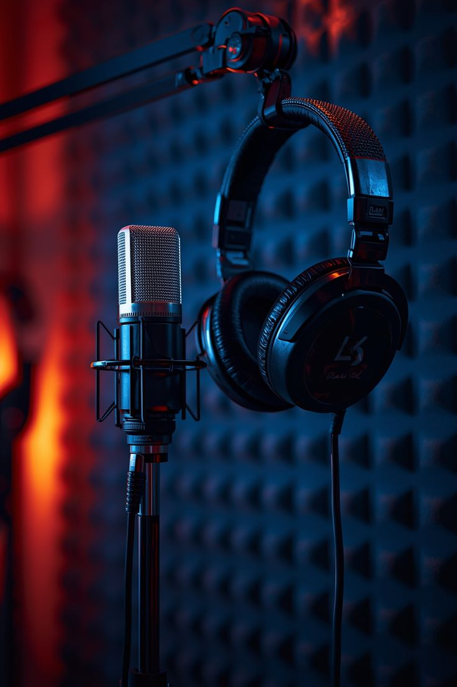

Mes Divertissement

L'Univers Musical
La musique est bien plus qu'un simple bruit de fond pour moi ; c'est un moteur de créativité qui m'accompagne dans chaque ligne de code. Elle possède ce pouvoir unique de traduire des émotions que les mots ne peuvent exprimer et de transformer une séance de travail intense en un moment de pure inspiration. Qu'il s'agisse de mélodies calmes pour me concentrer ou de rythmes énergiques pour me motiver, elle reste ma compagne fidèle au quotidien.
L'Art du Jeu Vidéo
Les jeux vidéo représentent pour moi le sommet de l'interactivité et de l'immersion technologique. Au-delà du simple divertissement, j'y vois une source d'apprentissage sur la résolution de problèmes complexes et la persévérance. Chaque univers virtuel est une leçon de design et d'ergonomie qui nourrit ma réflexion de développeur. C'est un espace où la stratégie et la rapidité d'esprit sont constamment sollicitées pour surmonter de nouveaux défis.
La Passion du Football
Le football incarne à mes yeux les valeurs fondamentales de l'esprit d'équipe et de la discipline. C'est un sport qui m'enseigne la force du collectif : seul on va plus vite, mais ensemble on va plus loin. Sur le terrain comme dans la vie, chaque match est une preuve que la détermination et l'effort constant finissent toujours par payer. C'est mon moment de déconnexion totale où seul comptent le jeu, la stratégie et le dépassement de soi.